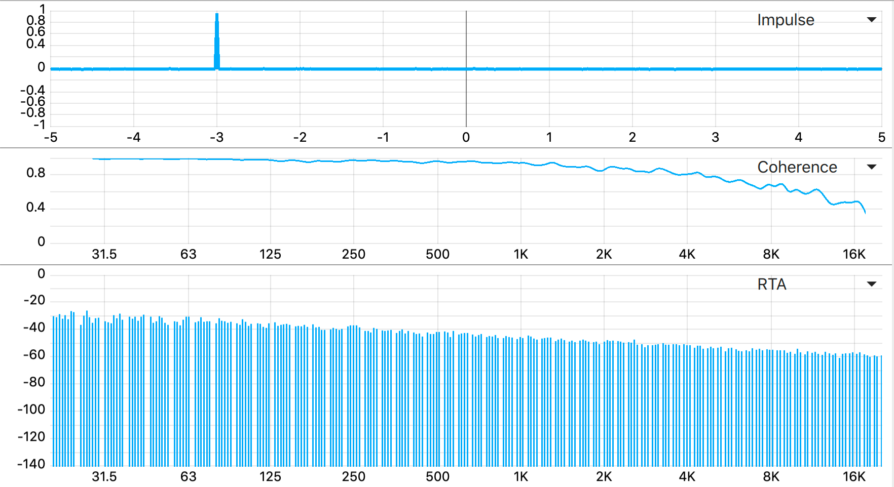
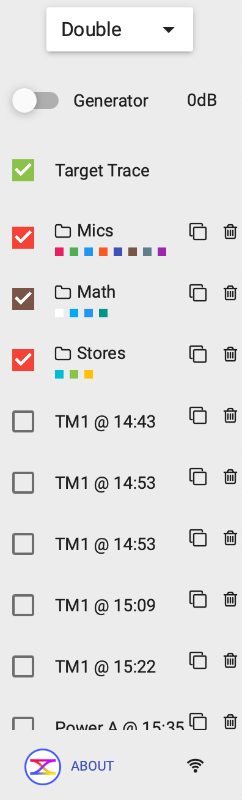

Quando você abre o OSM pela primeira vez, ele aparece com um gráfico só, no modo padrão chamado Spectrum. Pode parecer pouco — mas essa janela tem três regiões bem definidas, e entender o que cada uma faz é o ponto de partida do manual.
As três regiões da tela

Essas três regiões aparecem em qualquer modo, e cada uma tem uma função distinta:
- Área do gráfico (centro) É onde a medição é desenhada. Ocupa a maior parte da tela. No canto superior direito de cada gráfico tem o seletor de tipo (Spectrum, RTA, Magnitude, Phase, etc) — a Página 3 do manual explica todos os 9 tipos.
- Painel direito (medições e gerador) Lista as medições ativas, controla o gerador de sinal interno, e tem o botão ABOUT que mostra a versão do programa. Páginas 4 e 5 do manual cobrem este painel em detalhe.
- Barra inferior (controles globais) FFT power, janela, smoothing, canais de entrada (M e R), dispositivo de áudio, calibrate, STORE. Página 6 do manual cobre cada um.
Os três modos: Single, Double, Three
No topo do painel direito tem um dropdown que define quantos gráficos o OSM mostra ao mesmo tempo. As opções são:



Single para uma análise rápida ou ajustar uma coisa específica. Double com Magnitude em cima e Phase embaixo é o setup do dia a dia em alinhamento — você sempre quer ver os dois juntos (veja o Infográfico 04 sobre função de transferência). Three só vale a pena em tela ≥17" — em monitor pequeno, os gráficos ficam apertados demais para ler.
O painel direito muda com o modo

No modo Single o painel é mais enxuto (só Generator + medição ativa). No modo Double e Three ele cresce com novos elementos:
- Target Trace: uma curva-alvo de referência (importada ou criada manualmente) para você comparar a medição contra ela.
- Mics: pasta com microfones de medição ativos. Cada mic tem sua cor.
- Math: pasta com medições calculadas (Vector Sum, diferenças). Veja Página 8.
- Stores: traces salvos para comparar antes/depois de uma mudança.
- Lista de stored: medições congeladas no tempo, com timestamp (@ 14:43) para você lembrar quando foi feita.
O essencial pra reter desta página
- A janela tem três regiões fixas: gráfico (centro), painel direito (medições), barra inferior (controles).
- Cada gráfico tem seu próprio seletor de tipo (Spectrum, RTA, Magnitude, etc) no canto superior direito.
- O dropdown Single / Double / Three no topo do painel direito controla quantos gráficos mostrar.
- Para o dia a dia, Double com Magnitude + Phase é o que você vai usar mais.